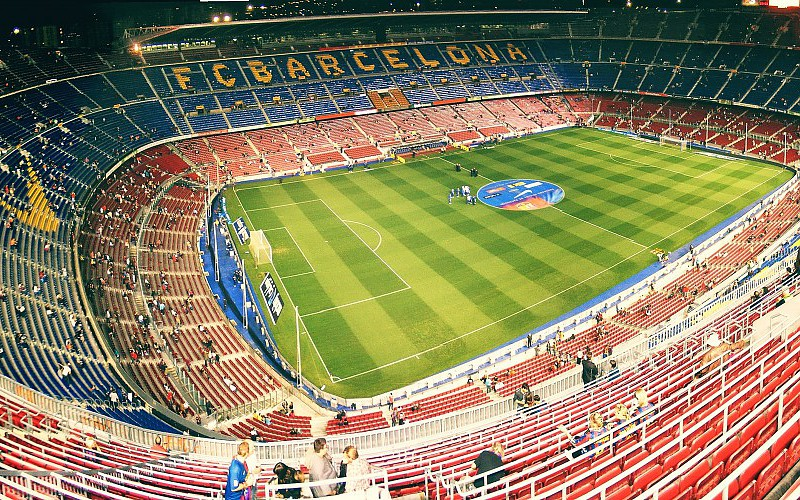

Stadium Camp Nou
Camp Nou (Catalan pronunciation: [kamˈnɔw], "new field", often referred to as the "Nou Camp" in English) is a football stadium in Barcelona, Catalonia, Spain. It has been the home of FC Barcelona since its completion in 1957. With a seating capacity of 99,354, it is the largest stadium in Spain by capacity. It is also the largest stadium in Europe and the third largest association football stadium in the world in terms of capacity. It has hosted numerous international matches at a senior level, including a 1982 FIFA World Cup semi-final match, two UEFA Champions League finals and the football competition at the 1992 Summer Olympics.The construction of Camp Nou started on 28 March 1954 as Barcelona's previous stadium, Camp de Les Corts, had no room for expansion. Although originally planned to be called "Estadi del FC Barcelona", the more popular name "Camp Nou" was used. The June 1950 signing of László Kubala, regarded as one of Barcelona's greatest players, provided further impetus to the construction of a larger stadium. The architects were Francesc Mitjans and Josep Soteras, with the collaboration of Lorenzo García-Barbón.
In May 1972, Camp Nou hosted its first European Cup Winners' Cup final between Rangers and Dynamo Moscow. Rangers won the match with a score of 3–2. The 1970s marked a turning point for Barcelona with the signing of a new player, Johan Cruyff, in 1973. Electronic scoreboards were installed in the stadium two years later. One of the stands displaying Barcelona's motto, Més que un club, meaning "More than a club". The stadium underwent an expansion in 1980, in anticipation of the 1982 FIFA World Cup, which added boxes, VIP lounges, a new press area, new markers and the construction of the third tier, although smaller in height than the original design by 6 meters, 46.60 meters in height compared to the original design of 52.50 meters. The expansion of the stadium added 22,150 new seats, taking the total seating capacity to 71,731, and the standing capacity was expanded by 16,500 to 49,670, taking the total stadium capacity (seated and standing combined) to 121,401.[10] FC Barcelona's record attendance was set on 5 March 1986 in the European Cup quarter final against Juventus in front of 120,000 spectators, just 1,401 shy of the stadium's capacity.
